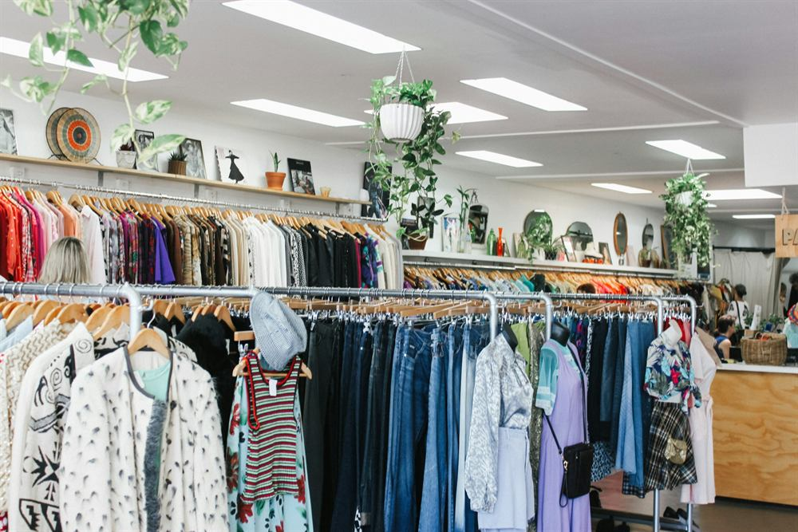

Boutique de dépôt-vente à Lille
L'Atelier des Marques
Bienvenue dans notre dépôt-vente
L'Atelier des Marques est un dépôt-vente au cœur du Vieux-Lille. Notre dépôt-vente propose des vêtements de marque. Ce dépôt-vente chic permet de donner une seconde vie aux pièces préférées. Dans notre dépôt-vente, vous trouvez des vêtements, des sacs et des chaussures à prix doux. Le dépôt-vente est simple, rapide et pratique pour vendre et acheter.

Concept dépôt-vente
Notre dépôt-vente à Lille sélectionne des pièces en excellent état. Le dépôt-vente fonctionne avec un contrôle qualité strict. Vous apportez vos articles dans notre dépôt-vente, nous les mettons en avant dans la boutique et sur le site. Grâce au dépôt-vente, vous achetez des marques à prix réduits et vous vendez facilement.
Nos produits du dépôt-vente


Pourquoi choisir notre dépôt-vente
Prix attractifs
Dans notre dépôt-vente, les pièces sont 30 à 70% moins chères que le neuf. Le dépôt-vente permet de s'offrir des marques sans se ruiner.
cliquez iciSélection de marques
Le dépôt-vente propose Zara, Mango, Sandro, Maje, Ba&sh, Coach, Longchamp, Michael Kors et d'autres marques dans un dépôt-vente convivial.
en savoir plusVieux-Lille
Le dépôt-vente est situé dans le Vieux-Lille. Venez découvrir la boutique dépôt-vente pour vendre et acheter simplement.
voir